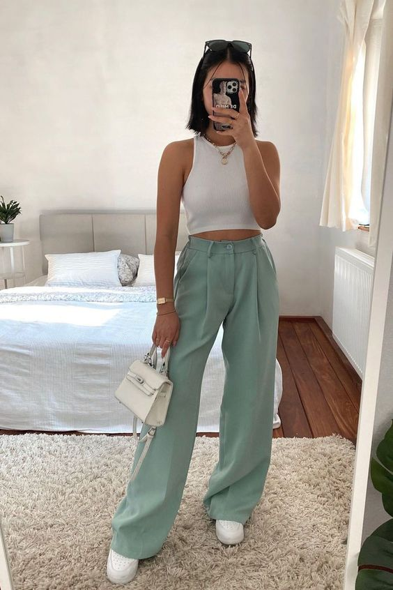

Casual
casual

casual
casual


A roupa casual é roupa informal, na hora de escolher uma roupa casual para vestir, a pessoa não importa com critérios rígidos de elegância e nem se preocupa por conseguir uma aparência de seriedade. O estilo casual tem como características cores mais neutras, tons pastéis e terroso, criar look tom sobre tom, uma cor clara e uma mais escura, ou vibrante.
O estilo casual é descontraído e confortável, e pode ser usado em diversas ocasiões do dia a dia.
Invista em roupas confortáveis: O estilo casual é caracterizado por roupas confortáveis, então opte por peças como jeans, camisetas, moletons e tênis. Escolha cores neutras: Cores neutras como preto, branco, cinza e azul marinho são a base do estilo casual, então opte por peças nessas cores e use acessórios para adicionar um pouco de cor ao seu look
Use acessórios: Acessórios como bonés, óculos de sol, cachecóis e bolsas podem adicionar um toque de estilo ao seu look casual
Combine peças simples: Combine peças simples, como camisetas com jeans, ou moletons com calças de moletom.
Aposte em peças clássicas: Peças clássicas, como uma jaqueta de couro ou uma camisa branca, são versáteis e podem ser usadas em diversas ocasiões.
Use camadas: Camadas de roupa são uma ótima opção para o estilo casual, pois permitem que você se adapte às mudanças de temperatura e adiciona dimensão ao seu look.
Não tenha medo de experimentar: O estilo casual é descontraído, então não tenha medo de experimentar diferentes combinações de roupas e acessórios para criar o seu próprio estilo.